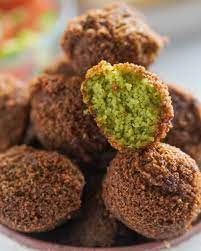

<!DOCTYPE html>

<html lang="en">

<head>

    <meta charset="UTF-8">
    <title>Falafel</title>

</html>


<body>

    <h1>Falafel</h1>

    

    <h2>Description</h2>

   
     <p>Falafel, or ta'ameya as they call it in Egypt, is an all-time favorite street food. In most parts of the Middle East, falafel is made with ground chickpeas</p>

    <p>However, in Egypt, they make it with dried fava beans. They are best served with pita bread, tomato, onions, and tahini sauce.</p>


    <h3>Ingredients</h3>

<ul>

    <li>2 cups <em>dried</em>split fava beans</li>
    <li>1 red onion, <strong>quartered</strong></li>
    <li>half a cup of fresh parsley</li>
    <li>½ cup fresh cilantro</li>
    <li>½ cup fresh dill</li>
    <li>3 cloves garlic</li>
    <li>1 ½ teaspoons ground coriander</li>
    <li>1 ½ teaspoons salt</li>
    <li>1 teaspoon ground cumin</li>
    <li>1 cup sesame seeds<strong>(optional)</strong></li>
    <li>vegetable oil for frying</li>


</ul>


    <h3>Steps</h3>

    <li>Place fava beans in large bowl and cover with several inches of water. Let soak, 8 hours to overnight. Drain.</li>
    <li>Combine soaked fava beans, red onion, parsley, cilantro, dill, garlic, coriander, salt, and cumin in a food processor; process to a dough-like consistency.</li>
    <li>Heat a skillet over medium heat. Add sesame seeds; cook, stirring <em>occasionally</em>, until toasted, about 5 minutes. Transfer to a large plate.</li>    </li>
    <li>Shape fava bean mixture into balls. Roll in sesame seeds to coat.</li>
    <li>Fill a large saucepan 1/4 full with oil; heat over medium heat. Fry fava bean balls in batches until golden brown, 3 to 5 minutes. Drain on paper towels.</li>


    </body>


</html>